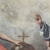

- Home
- Itinerari
- La-Via-Regia-Diocesana
- Chiesa San Nicolò da Bari
Descrizione
Storia della fabbrica
La primitiva costruzione della chiesa risale al XIII secolo; oggi del primitivo nucleo originario ne sono visibili soltanto le absidi la cui forma poligonale è poco diffusa in Sicilia. La crudezza della pietra, gli archetti pensili della parte sommitale e la merlatura testimoniano come l’originaria struttura fosse in stile normanno-svevo. Nel 1591, come attesta una lapide collocata sul muro esterno del transetto, l’edificio sacro subì una totale opera di rifacimento mentre nel 1605 un’altra lapide, posta sul pilone centrale della cupola, ricorda come l’interno della chiesa fu dotato di poderosi pilastri interni e assunse un aspetto basilicale. Tra il XVII e il XVIII secolo l’edificio sacro è stato oggetto di ulteriori interventi. Attualmente l’edificio si presenta come un complesso in stile tardo rinascimentale ma evidenti sono i segni delle stratificazioni avvenute nel corso dei secoli. Un’iscrizione posta sull’antico campanile, demolito dopo il terremoto del 1693, ricorda che la chiesa in origine era dedicata al Santissimo Salvatore e che solo successivamente fu dedicata a San Nicola. Secondo il sacerdote randazzese Salvatore Calogero Virzì la devozione verso San Nicola è legata all’arrivo in città di popolazioni lombarde che sostituirono i Greci che abitavano il quartiere. Dopo la dedicazione a San Nicola la chiesa ha svolto un importante ruolo non solo nella vita religiosa ma anche sociale della città. In seguito alle disposizioni di Federico II di Svevia, che imponeva ai centri di maggiore importanza un luogo deputato alle assemblee del popolo, la chiesa ebbe il privilegio di ospitare le pubbliche adunanze. Per tre volte fu sede della riunione del Generale Parlamento del Regno sotto gli Aragonesi ed ebbe anche l’onore di custodire la Cassa del Tesoro e lo Stendardo cittadino. In essa, inoltre, si celebravano le esequie dei regnanti e da essa aveva inizio la cavalcata in onore al nuovo re. Il 21 dicembre del 1746 l’edificio sacro venne consacrato da monsignor Francesco Tommaso Moncada, Arcivescovo di Messina. Nel 1751 la chiesa fu elevata a Collegiata e nel 1785 i canonici ebbero il privilegio della cappa e dell’ermellino. A causa dei bombardamenti del 1943 la chiesa subì ingenti danni che riguardarono non solo la struttura muraria ma anche il patrimonio artistico custodito al suo interno. Per volere dell’arciprete Francesco Fisauli, su progetto dell’architetto Salvatore Priolo, il tempio sacro, nel 1950, fu dotato di una cupola che sostituì la precedente distrutta dai bombardamenti.
Prospetto
La facciata a salienti della chiesa risale al secolo XVI ed è opera dell’architetto toscano Andrea Calamech. Imponente come le chiese barocche di Roma, si caratterizza per uno stile sobrio e austero lontano dalla ricchezza di elementi che caratterizzano le facciate barocche delle chiese della Sicilia orientale. Esso si sviluppa su due ordini. Nel primo, delimitato da paraste e coppie di colonne binate, trovano posto i tre ingressi. Il portale centrale è definito da due colonne collocate su alti basamenti ed è sormontato da un timpano spezzato all’interno del quale è l’Agnello pasquale, testimonianza, secondo alcuni storici locali, che probabilmente un tempo la chiesa fu sede vescovile. Il secondo ordine, delimitato da due coppie di colonne per l’altezza della navata centrale, presenta al centro una grande apertura sormontata da un timpano circolare e definita da coppie di colonne binate, mentre due grandi volute raccordano l’altezza della navata laterale con quella centrale. A completare l’intera facciata è un grande timpano triangolare sulla cui sommità è collocata una grande croce. Sul lato destro del prospetto è il campanile la cui costruzione risale al 1783. L’opera, che sostituisce l’originaria torre campanaria in stile arabo-normanno demolita a causa del terremoto del 1693, si presenta monca della parte sommitale.
Testi: Anna e Maria Coco
Le opere principali
-
 Fonte battesimale
Fonte battesimale
Di: Maestranze messinesi -
 Madonna con Sante
Madonna con Sante
Di: Ignoto pittore -
 San Tommaso e Santi domenicani
San Tommaso e Santi domenicani
Di: Ignoto pittore -
 San Nicola
San Nicola
Di: Antonello Gagini -
 Custodia del Santissimo Sacramento
Custodia del Santissimo Sacramento
Di: Ignoto scultore -
 Presbiterio
Presbiterio
Di: Ignoto scultore -
 Madonna della Catena
Madonna della Catena
Di: Ignoto scultore -
 Madonna con il Bambino tra le sante Lucia e Agata
Madonna con il Bambino tra le sante Lucia e Agata
Di: Ignoto pittore -
 Altare del Crocifisso
Altare del Crocifisso
-
 San Gregorio Magno
San Gregorio Magno
Di: Giuseppe Salerno detto Zoppo di Gangi -
 San Michele Arcangelo
San Michele Arcangelo
Di: Ignoto pittore -

Santissima Trinità
Di: Giuseppe De Thomasio -
 Cristo fonte di Grazia
Cristo fonte di Grazia
Di: Onofrio Gabrieli -
 Madonna con Bambino e san Giacomo
Madonna con Bambino e san Giacomo
Di: Ignoto pittore